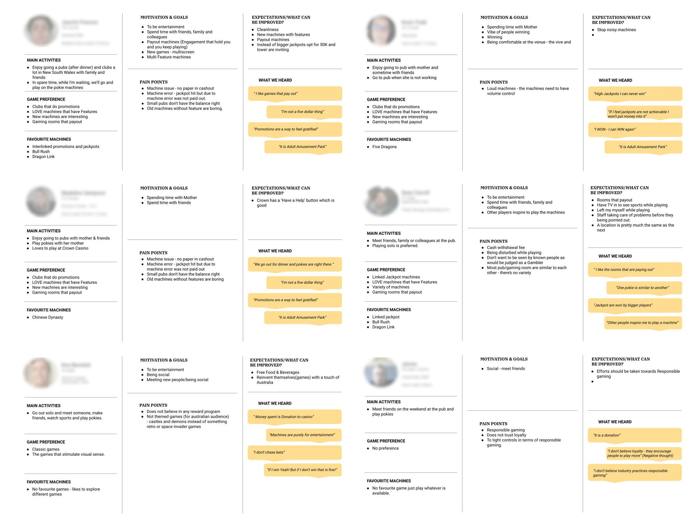
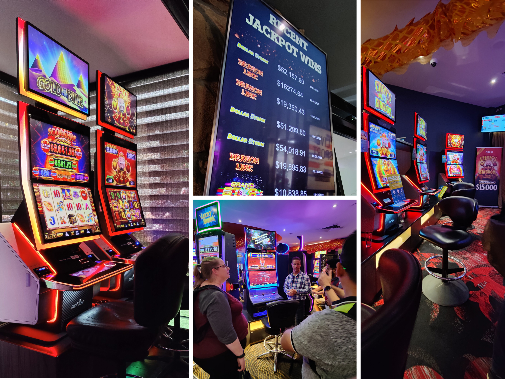
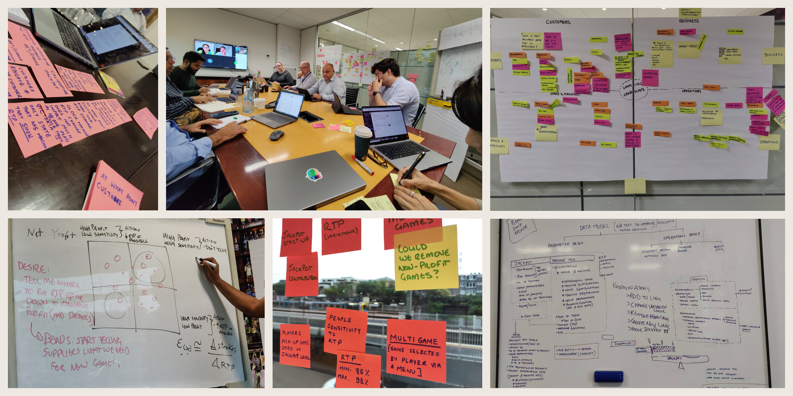
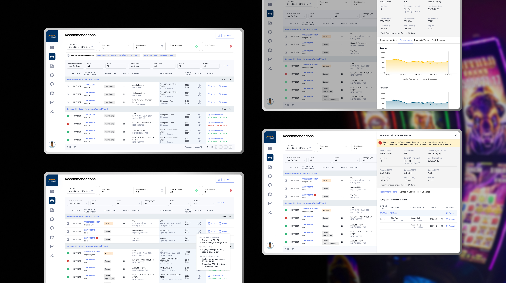

How a small team learned to make confident decisions across 350 venues and 13,000 machines, without hiring more people.
Endeavour Group's Gaming Product Team was responsible for the performance of every gaming machine across every venue they operated. That meant constant decisions about machine selection, game content, jackpot settings, cabinet changes, and venue mix.
The team was highly experienced. The problem was not expertise. The problem was that the scale of decisions had grown beyond what any team could comfortably manage through manual analysis and spreadsheets.
Each decision required cross-referencing venue demographics, machine performance data, player behaviour patterns, regulatory constraints, and seasonal trends. Simultaneously. Across hundreds of venues.
The organisation didn't need better optimisation models. It needed a scalable way to make expert decisions, faster, across a complexity that was already beyond manual control.


It is an adult amusement park. I go for the experience, not just to win.
If I feel jackpots are not achievable, I won't put money into it.
One pokie is similar to another. A location is pretty much the same as the next.
Optimise RTP, Hold, and Jackpot settings across machines
How might experts make faster, more scalable, more confident decisions across a complex multi-venue ecosystem?


Pankaj has been an outstanding partner throughout our engagement. His ability to translate complex data science outputs into clear, actionable interfaces made our team significantly more effective. The platform he designed changed how we make decisions at a venue level.
Working with Pankaj on the Gaming Intelligence Hub was a genuinely collaborative experience. He has an unusual ability to ask the right questions early, which saved us significant rework downstream. He bridges business analysis and UX in a way I haven't often encountered.
Recommendation quality alone does not drive adoption. Users need transparency, rationale, and confidence signals before they will change behaviour based on a system's output. Trust is a design problem. It has to be deliberately engineered into every surface that touches a recommendation.
The most impactful contributions on this project were not screen-level decisions. They were decisions about information flow, operational sequencing, and how expertise moves through an organisation. If you are not thinking about the system around the interface, you are thinking too small.
In environments where roadmap clarity is incomplete and stakeholder responsiveness varies, design leadership means stepping into the product definition gap. This is not overstepping. It is what keeps work moving and keeps the team aligned when prescription is not available.
This project contained more ambiguity than most. Scope changed. Priorities shifted. Data constraints arrived mid-project. The design response was to treat ambiguity as material: use it to create structure, direction, and alignment where none existed. That capability is undervalued and rarely articulated.